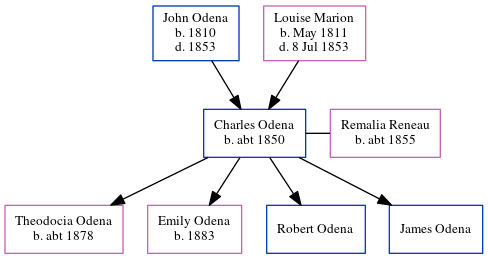

Charles T Odena c1850 -
[ Home ] | [ Calendar ] | [ Surnames Index ] | [ Census Index ] | [ Family History ]The child of John Odena and Louise Marion, Charles Odena, the three times great-uncle of Michele Copp (née Phillips), was born in South Carolina c. 18501,2,3, and was orphaned in 1853 by the death of both parents in that year her.
He had 4 children with Remalia Reneau: Theodocia Josephine, Emily, Robert White and James FrederickDuring his life, he was living in St Michael and St Phillip, Charleston, South Carolina in 18501; in Atlanta Ward 2, Fulton, Georgia in 18602; and in Osceola Town, Mississippi, Arkansas in 19003.
Parents
- John Hypolite was born in 1810
- Louise Marie was born in May 1811
Children
- Theodocia Josephine was born c. 1878
- Emily was born in 1883
Citations
- 1850 United States Federal Census Online publication - Provo, UT, USA: The Generations Network, Inc., 2005.Original data - United States of America, Bureau of the Census. Seventh Census of the United States, 1850. Washington, D.C.: National Archives and Records Administration, 1850. M432,
- 1860 United States Federal Census Online publication - Provo, UT, USA: The Generations Network, Inc., 2004.Original data - United States of America, Bureau of the Census. Eighth Census of the United States, 1860. Washington, D.C.: National Archives and Records Administration, 1860. M653, 1
- 1900 United States Federal Census Online publication - Provo, UT, USA: MyFamily.com, Inc., 2004.Original data - United States of America, Bureau of the Census. Twelfth Census of the United States, 1900. Washington, D.C.: National Archives and Records Administration, 1900. T623, 1854 rolls.
Family Tree
Generated by ged2site. Last updated on Jun 6, 2024